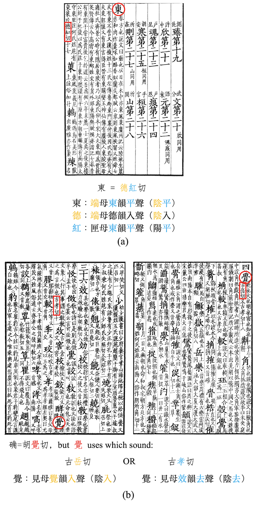
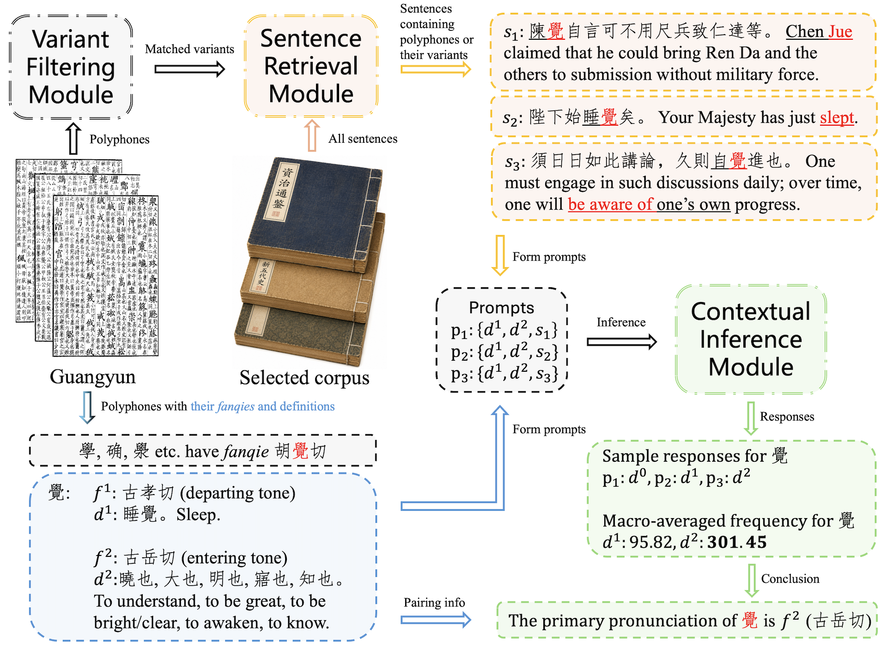
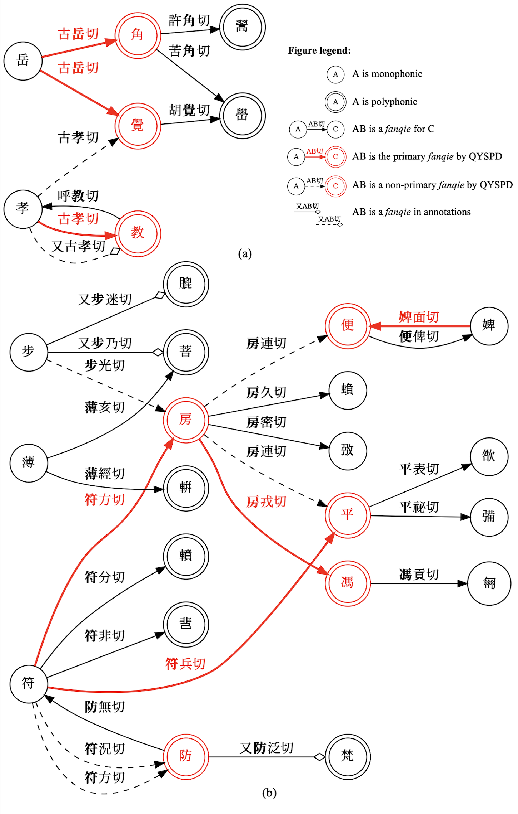
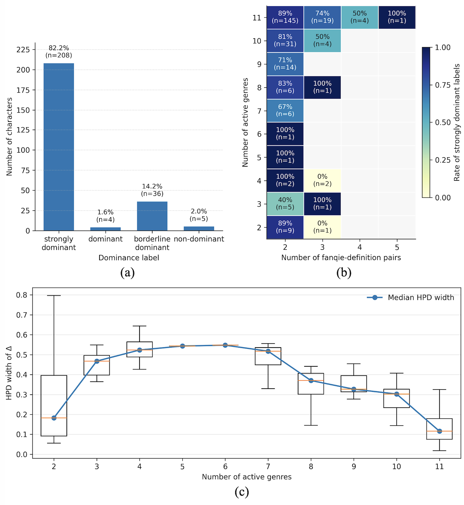

Historical Phonology · Qieyun System · LLM-Assisted Philology
Resolving Inherited Ambiguity in Chinese Historical Phonology with Song Dynasty Corpus Evidence
QYSPD 面向《广韵》体系中的多音反切字，结合字书内部证据、宋代多体裁语料检索与上下文定义推理，将分叉的反切歧义转化为可追踪的 primary paths。

Method
从字书证据到语境推理
QYSPD 由变体过滤、句子检索和语境推理三个环节组成。系统先在《广韵》内部限定可信变体，再从宋代多体裁语料中提取包含多音字的上下文，最后让模型在候选释义之间进行受约束判断。

Primary Paths
把继承性歧义收束成显式路径
当多音字作为反切上字或下字继续参与注音时，歧义会沿反切关系传递。QYSPD 为角色有效的 primary fanqie 建立红色路径，使后续音系重建可以沿着稳定、可解释的链条展开。

Results
宋代语料中的主读音优势
论文通过 posterior dominance analysis 检验 primary assignments 的稳定性。多数多音反切字在跨体裁语料中呈现清晰主导读音，体裁差异更多体现为专门语域的词义偏好，而不是推理结果的不稳定。
